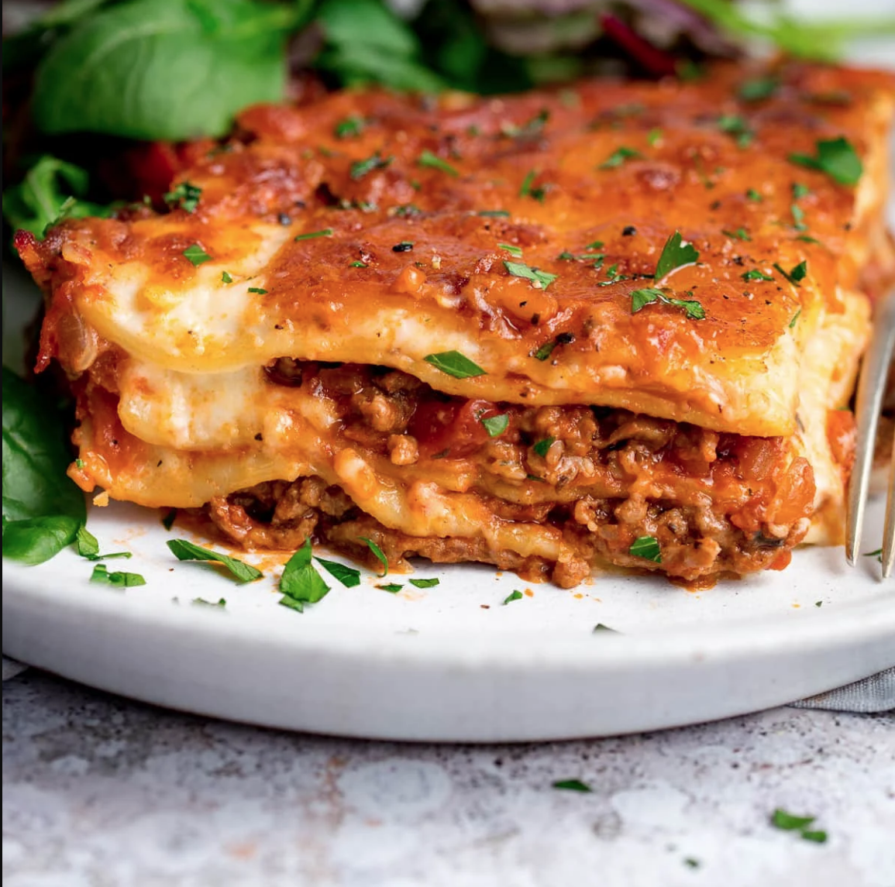

Lasagna Recipe

Description
One hour from start-to-finish (and half of that's in the oven) and you can be serving up a big meaty-cheesy dish of lasagne, with enough for second helpings. Because we all want second helpings when it comes to lasagne right?
Serve it with a big salad (I LOVE sliced red onions, crisp lettuce and some crunchy sliced radishes in my side salad) and some buttery garlic bread.
Ingredients
- 3/4 lb. lasagna noodles
- 1 tsp. extra-virgin olive oil, plus more for drizzling
- 2 lb. ground beef
- 4 cloves garlic, minced
- 2 tsp. dried oregano
- Kosher salt
- Freshly ground black pepper
- 2 (32-0z.) jars marinara
- 16 oz. whole milk ricotta
- 1/2 c. freshly grated Parmesan, divided
- 1/4 c. chopped parsley, plus more for garnish
- 1 large egg
- 2 lb. sliced mozzarella
Steps
- The Beef Ragu
- Béchamel Sauce (or white sauce)
- Assemble the Lasagne
- Bake for 1hr
- Rest for 10 mins
HOME